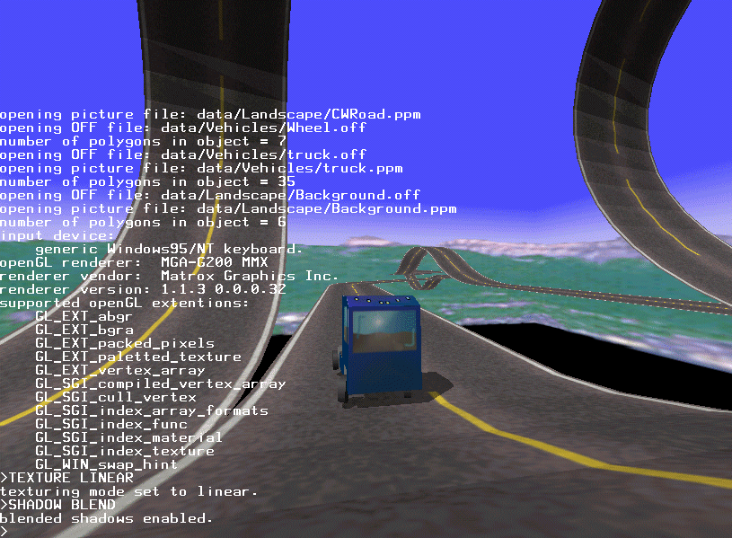

{kind=link}
01
Real-time rendering
An OpenGL renderer for textured models, interpolated surface normals, projected shadows and background objects.
Open source since 2000
CarWorld is a cross-platform driving simulator and experimental test bed for real-time rendering, vehicle dynamics and networking.
Historical project, preserved and maintained on GitHub

View full-size screenshotAbout the project
CarWorld is a driving simulator and demonstration program created by Marcus Hewat, mostly while he was a student. It became a practical place to test ideas in graphics, mechanics, input and networked simulation.
The source code is available under the GNU General Public License v3.0. The project has run on Linux, Windows, macOS, HP-UX, IRIX, BeOS and MorphOS.
Under the hood
01
An OpenGL renderer for textured models, interpolated surface normals, projected shadows and background objects.
02
Simulation in standard SI units with configurable mass, inertia, suspension, damping, torque and friction.
03
Variable simulation increments keep CarWorld time independent of the rendering frame rate.
04
Built on SDL and OpenGL, with support developed and contributed across many operating systems.
From the archive
Build requirements
CarWorld is written in C++ and uses SDL2, SDL2_image, SDL2_net, OpenGL and GLU. See the repository documentation for the currently known build instructions.
Please note: the modernized build has not yet been verified. Historical binaries are available from GitHub Releases.
Release history
Selected milestones from the original project history.
A note from the archive
The original CarWorld website included a 2009 appeal for open graphics drivers. It argued that open drivers give users longer hardware support, freedom of platform choice and fewer artificial restrictions.
This historical statement has been condensed for the modern site. It is retained as part of the project’s story and should not be read as current purchasing advice.
{kind=link}
{kind=link}
{kind=link}